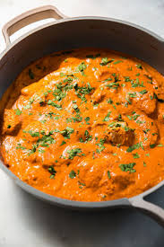

Butter Chicken

Butter Chicken Recipe
Ingredients:
- 500g (1 lb) boneless chicken, cut into pieces
- 2 tablespoons butter
- 1 large onion, finely chopped
- 2 cloves garlic, minced
- 1-inch piece of ginger, minced
- 1 can (400g) tomato puree
- 1/2 cup heavy cream
- 1 tablespoon ground cumin
- 1 tablespoon ground coriander
- 1 teaspoon garam masala
- 1 teaspoon turmeric powder
- 1 teaspoon red chili powder (adjust to taste)
- Salt to taste
- Fresh cilantro, chopped (for garnish)
Instructions:
- Heat the butter in a large pan over medium heat.
- Add the chopped onions and sauté until they are golden brown.
- Stir in the minced garlic and ginger, cooking for another minute until fragrant.
- Add the ground cumin, ground coriander, garam masala, turmeric powder, and red chili powder. Cook for 2 minutes, stirring constantly.
- Add the chicken pieces to the pan and cook until they are browned on all sides.
- Pour in the tomato puree and mix well. Bring the mixture to a simmer.
- Reduce the heat to low and let it cook for about 20 minutes, or until the chicken is cooked through and tender.
- Stir in the heavy cream and cook for another 5 minutes. Adjust seasoning with salt as needed.
- Garnish with fresh cilantro before serving.
- Serve hot with naan bread or rice.